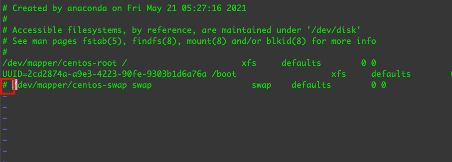
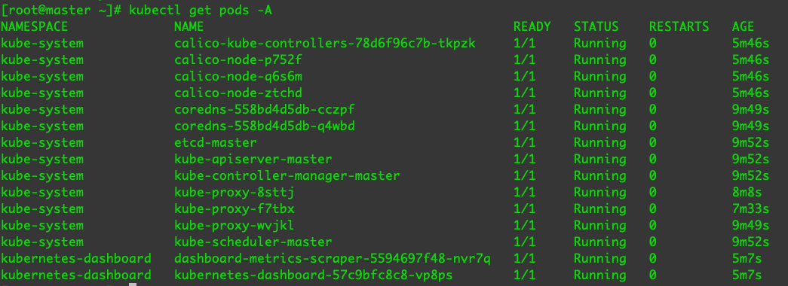

不尚贤，使民不争；不贵难得之货，使民不为盗；不见可欲，使民心不乱。是以圣人之治。
k8s环境搭建
1. 下载CentOS镜像
- 访问：https://mirrors.ustc.edu.cn/
- 点击右侧获取安装镜像，选择centos7 x86_64 Minimal
- vmware安装镜像
按照初始环境搭建安装三个虚拟机
环境要求
- 每台机器 2 GB 或更多的 RAM
- 2 CPU 核或更多（master节点即可）
- 集群中的所有机器的网络彼此均能相互连接
- 节点之中不可以有重复的主机名、MAC 地址或 product_uuid
三台虚拟机都修改hostname
1
2
3hostnamectl set-hostname master
hostnamectl set-hostname node1
hostnamectl set-hostname node2
2. 配置网络
1 | cd /etc/sysconfig/network-scripts |
1 | TYPE=Ethernet |
systemctl restart network
三个虚拟机都要配置网络设置不同的IP。
三台机器都关闭防火墙
1 | systemctl stop firewalld; systemctl disable firewalld |
配置Hosts方便迁移(vi /etc/hosts):
master:
1 | 172.16.42.101 node1 |
node1:
1 | 172.16.42.100 master |
node2:
1 | 172.16.42.100 node1 |
3. 允许 iptables 检查桥接流量
三个节点都要操作
内核参数修改
br_netfileter模块用于将桥接流量转发至iptables链，br_netfileter内核需要开启转发
1
modprobe br_netfilter
查看是否成功，如果没有成功，结果为空
1
lsmod | grep br_netfilter
添加流量桥接转发
1
2
3
4
5cat <<EOF | tee /etc/sysctl.d/k8s.conf
net.bridge.bridge-nf-call-ip6tables = 1
net.bridge.bridge-nf-call-iptables = 1
net.ipv4.ip_forward = 1
EOF1
sysctl -p /etc/sysctl.d/k8s.conf
4. 关闭swap交换分区
临时关闭
1
swapoff -a
关闭完后查看是否为0
1
free -m
永久关闭
1
vi /etc/fstab
注释掉swap行

注：
- 在云平台中用不到swap分区，因为没有空间就会报警
5. 修改docker文件驱动
介绍
- kubelet默认文件驱动为system，docker默认文件驱动为cgroupfs。
- 当linux的init系统发展到system之后，system 与 cgroups发生了融合（systemd提供了cgroups的使用和管道接口）
修改docker的daemon.json
1
mkdir /etc/docker
1
2
3
4
5
6
7
8
9
10cat <<EOF | sudo tee /etc/docker/daemon.json
{
"exec-opts": ["native.cgroupdriver=systemd"],
"log-driver": "json-file",
"log-opts": {
"max-size": "100m"
},
"storage-driver": "overlay2"
}
EOF
6. 配置终端代理
vi ~/.bash_profile
ip为宿主机vmware网卡IP，端口为宿主机代理端口
1 | #终端设置代理 |
起用配置
1
source ~/.bash_profile
开启socks代理
1
proxysockes_on
开启http代理
1
proxyhttp_on
关闭代理
1
proxy_off
==下面的一系列操作如果无法访问外网下载请开启代理再尝试==
7. 配置docker system代理
ip为宿主机vmware网卡IP，端口为宿主机代理端口
1 | mkdir -p /etc/systemd/system/docker.service.d |
1 | [Service] |
1 | systemctl daemon-reload |
8. 关闭selinux
1 | setenforce 0 |
重启 reboot
9. 安装kubeadm
三台节点虚拟机都要安装
写入kubernetes配置
1
2
3
4
5
6
7
8
9
10cat <<EOF | tee /etc/yum.repos.d/kubernetes.repo
[kubernetes]
name=Kubernetes
baseurl=https://packages.cloud.google.com/yum/repos/kubernetes-el7-\$basearch
enabled=1
gpgcheck=1
repo_gpgcheck=1
gpgkey=https://packages.cloud.google.com/yum/doc/yum-key.gpg https://packages.cloud.google.com/yum/doc/rpm-package-key.gpg
exclude=kubelet kubeadm kubectl
EOF安装kubelet kubeadm kubectl
1
yum install -y kubelet kubeadm kubectl --disableexcludes=kubernetes
开机启动kubelet
1
systemctl enable --now kubelet
10. master节点初始化
1 | kubeadm init \ |
安装完后会有提示执行如下操作
1 | mkdir -p $HOME/.kube |
安装完成后会有加入节点的命令，也可以通过如下命令查看
1 | kubeadm token create --print-join-command |
11. node节点加入
node节点执行join命令
1 | kubeadm join 172.16.42.100:6443 --token dyteek.4tugaul382c7sgsb \ |
master通过kubectl get nodes命令查看加入的节点，这时候还是not ready的状态，需要我们安装网络插件
12. master节点安装网络插件calico
下载配置文件
1
wget https://docs.projectcalico.org/manifests/calico.yaml
修改calico.yaml的CALICO_IPV4POOL_CIDR 的 value 为 10.220.0.0/16（初始化时配置的地址）
1
2
3
4
5
6
7
8
9
10
11
12
13
14- name: FELIX_WIREGUARDMTU
valueFrom:
configMapKeyRef:
name: calico-config
key: veth_mtu
# The default IPv4 pool to create on startup if none exists. Pod IPs will be
# chosen from this range. Changing this value after installation will have
# no effect. This should fall within `--cluster-cidr`.
- name: CALICO_IPV4POOL_CIDR
value: "10.220.0.0/16"
# Disable file logging so `kubectl logs` works.
- name: CALICO_DISABLE_FILE_LOGGING
value: "true"
应用配置
1
kubectl apply -f calico.yaml
查看节点状态：
1 | kubectl get nodes |

查看pod:
1 | kubectl get pods -A |

13. master节点安装dashboard插件
1 | wget https://raw.githubusercontent.com/kubernetes/dashboard/v2.0.0/aio/deploy/recommended.yaml |
添加nodePort 和 type
1 |
|
追加管理配置
1 |
|
应用插件
1 | kubectl apply -f recommended.yaml |
查看生成的dashboard配置
1 | kubectl get pods -A |
生成token
1 | kubectl describe secrets -n kubernetes-dashboard dashboard-admin |
查看映射端口
1 | kubectl svc -n kubernetes-dashboard |
访问chrome可能有问题，用火狐。
14. 用kubeadm重置集群
如果出错我们可以重置，从新安装
master节点
1 | kubeadm reset |
15. 创建一个pod
vim nginx.yaml
1 | apiVersion: v1 |
kubectl apply -f nginx.yaml
kubectl get pods
结果：
1 | [root@master ~]# kubectl get pods |
进入Pod:
1 | kubectl exec -it nginx-demo /bin/bash |